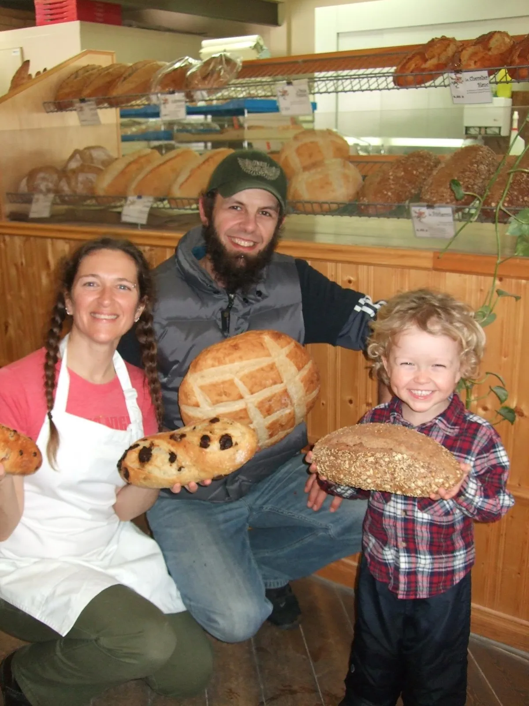
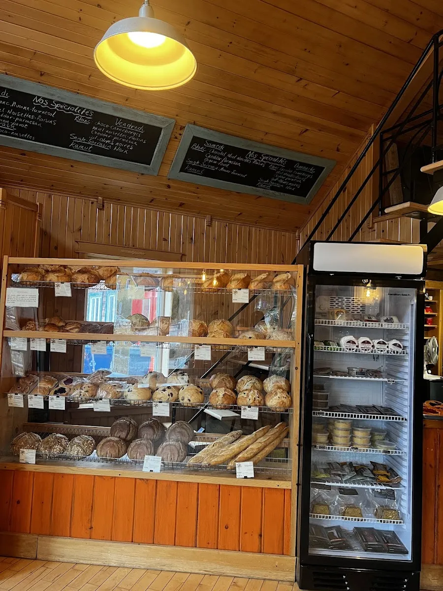
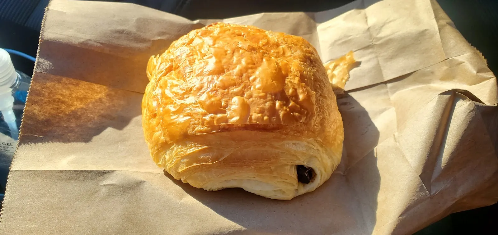

Pains et viennoiseries faits sur place, et des produits locaux pour les accompagner — au cœur du village de Saint-Élie-de-Caxton.



« Boulangerie artisanale : pains & viennoiseries + produits locaux pour accompagner » — c'est ainsi que la maison se présente sur Facebook, où plus de 2 800 personnes la suivent.
Les clients y reviennent pour la chocolatine aux framboises, la baguette au sésame et le café servi au bol. La liste des pains du jour et les heures d'ouverture* seront intégrées ici.
« Boulangerie que nous avons découvert par hasard. Nous y avons acheté une miche oignon et graines de pavot. La meilleure que j'ai jamais mangé !! Le pain est tellement frais qu'il est impossible d'y résister nous en avons mangé dans l'auto… »
« Boulangerie qui me rappelle la douce France... chocolatier délicieuse, croissant aux amandes merveilleux et double café latte servi au bol souvenir de mon enfance. Un grand merci »
« Un très bel endroit avec une très gentille propriétaire. Nous avons adoré leur chocolatine aux framboises. Leur baguette au sésame est un incontournable. Allez faire un tour! »
« Bonne chocolatine et bon café! Je n’ai pas acheté de pains mais les baguettes étaient très belles! Excellent service des jeunes filles présentes aujourd’hui le 15 juillet. »
Au cœur du village de Saint-Élie-de-Caxton.
Appeler (819) 221-2755 Suivre sur Facebook